Website Benchmarking, Survey, Cardsorting, Wireframing, Visual Design
Role
Background
Problem
The old website of the Department of Library & Information Science at National Taiwan University (台灣大學圖書資訊學系) was built several years ago, and users had been having problems in finding relevent information.
The Old Website
Below is how the website looked like at the time in June, 2014.
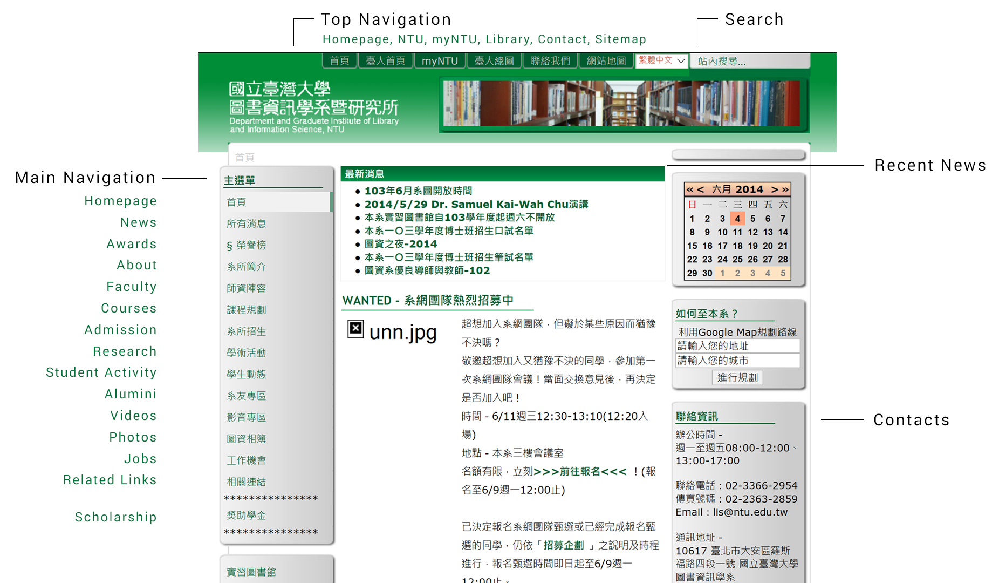
Needs Analysis
To dig deeper into what the problem was and what the user needs were, we conducted interview with the department director and the staff managing the website. We also sent out surveys to 64 undergraduate students in the department.
Interview with Department Director
Our goals for the interview with the director, Shan-Ju Lin Chang, was to understand her expectation and vision for the department website. Below are the insights we got from the interview:
Public Image
For director Chang, her top concern for the website is how it would portray the department's image to the public.
User Groups
While public image is one of the major purposes for the website, Director Chang believed that in terms of user groups, current students should also be the priority.
Survey
The survey showed that for current students, they mostly used the website to search for courses available, and to look up the professors' office hours. For them, they were most unsatisfied with the website about:
- unclear labling of categories and headings,
- complex and non-intuitive structure which made it hard to find information, and
- outdated looks and layout of information.
They also expressed a desire for more study resources and career related information to be included on the website.
Insight from Benchmarking
To observe current trends in web design and to draw ideas from others, we looked at five renowned library & information science departments' website to conduct website benchmarking from several aspects.
The websites we looked at are:
- University of Washington Information School (UW iSchool)
- University of Michigan School of Information (UMSI)
- Rutgers University School of Communication and Information (Rutgers SC&I)
- Graduate Institute of Library and Information Science at National Taiwan Normal University (NTNU GLIS)
- Department of Information and Library Science at Tamkang University
The detailed analysis with screencaps can be read here [In Chinese]. Below are synthesized insights from the report:
Navigation
- Audience Segmentation:
- All three US iSchool (UW, UM, Rutgers) websites are segmented with audience, and provided specific page with information for that specific user groups.
- The user groups that these websites have in common are "Future Students, Current Students, Faculties, and Alumni".
- They reflect the program's mission and vision for the website. For example, UW iSchool, being the founder of iSchool consortium, has the "Partners" in their segmentation in particular.
- Navigation Bar: Most of the navigation bars list similar items. One thing that stand out to us is that both UMSI & Rutgers has "Directory" showing their faculties and students, which is something that's not common with Taiwan's university website.
Purpose / Branding
"Purpose" implies the first impression a user has with the website, which usually has great influence on how the user perceives the organization.
- Elements on Homepage:
- Most of the websites we looked at have similar homepage style with the title / logo on the top left corner, the horizontal navigation bar, and the carousel. Below the carousel, there are usually grids showing other contents, and the footer with contact information
- Carousel: the items that are commonly shown on the carousel include news, student or faculty achievement.
- Order of Navigation Categories:
- We found that for all the navigation bars we looked at, the number of categories falls between 6 to eight, and the categories are similar among them.
- However, there is a difference between the US and Taiwanese websites that for the American ones, they usually prioritize the program and research, while the Taiwanese ones usually have news and about as the first two categories.
About
"About" refers to if it is easy enough for the user to get a basic undersatnding of the organization while skimming through the website. It serves as the connection between the user and the organization.
- "About":
- Contact:
- News / Event:
Content
- Writing Style:
- News / Event:
Concept
Cardsorting

How we did cardsorting
We started by writing down the categories and items we found the website should contain individually onto the post-it notes. After that, we first put the categories (the pink post-it notes) into the order in terms of importance for the website, and later we reorganize all the items under the categories.
Sitemap
Below is the sitemap we came up with after doing cardsorting (translated from the original work into English).
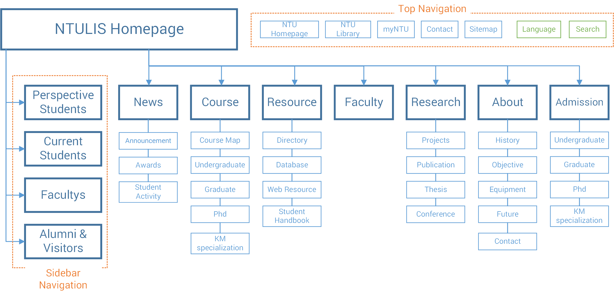
Major changes made
Here are the most significant changes we made from the old website with our solution. The detailed changes can be seen below with our wireframes
- Audience Segmentation
- Simplifying Structure
- Reordering the Categories
We decided to add audience segmentation (Perspective Students, Current Students, Faculties, Alumni & Visitors) to our website's structure to address to the specific needs of different user groups. What are included in each audience segmentation page can be seen below with our wireframes.
One of the major problems students have with the old website is there were too many layers and categories in terms of structure, and the information was not organized in an easy-to-understand way. Therefore, we decided to keep the number of categories on navigation bar to 7, following the convention we observed in other websites.
We reordered the categories according survey results and the director's vision for the new website. At the same, we try to group categories that have related purpose next to each other to save user's time in finding information. For example, for "Course" and "Resource", the targeted audiences are mainly current students, so we put the two next to each other on the navigation bar. The same also applies to "About" and "Admission" that are more directed at perspective students.
Wireframes
Below are selected pages from the low-fidelity wireframes of our solution created in Axure.
1: Homepage
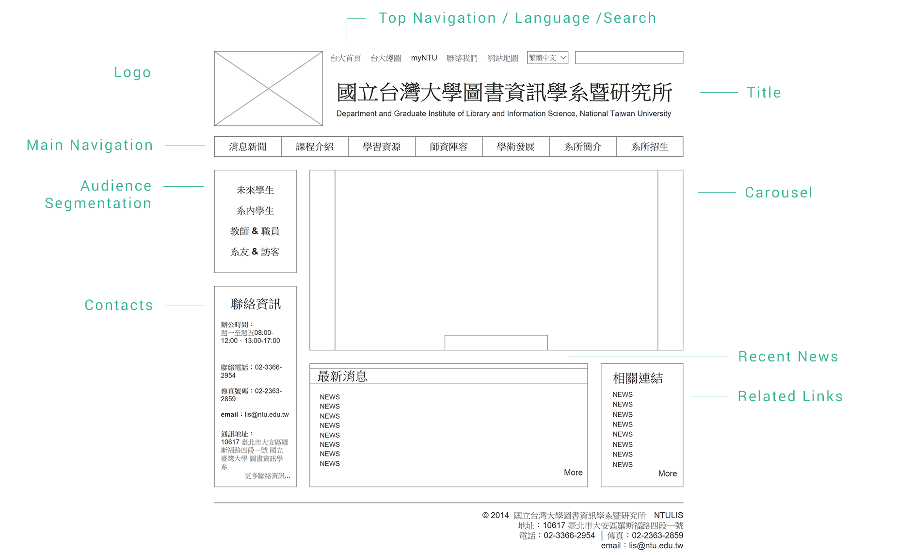
2: Navigation
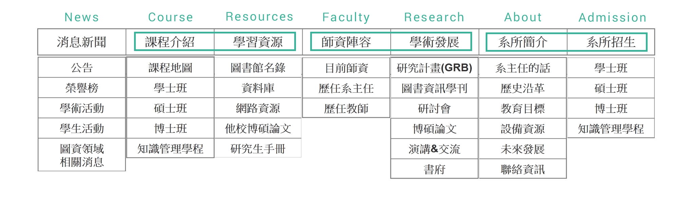
3: Perspective Students
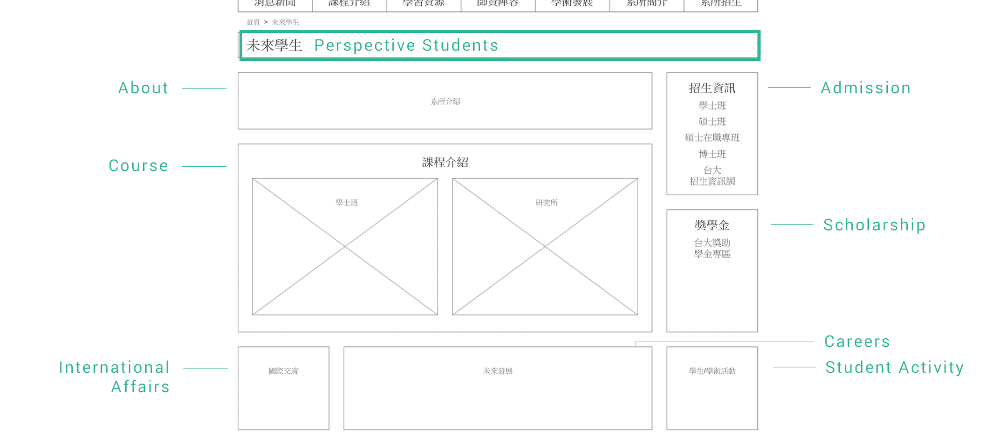
4: Current Students
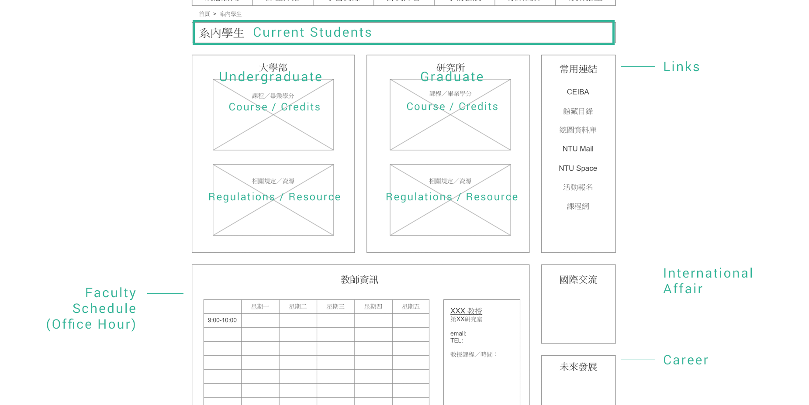
5: Alumini & Visitors
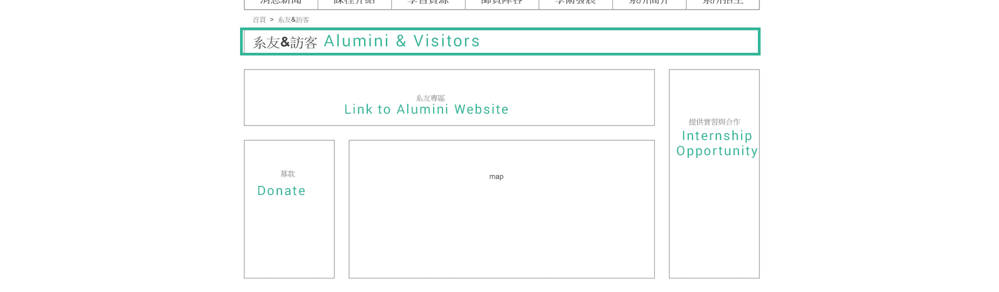
6: Admission
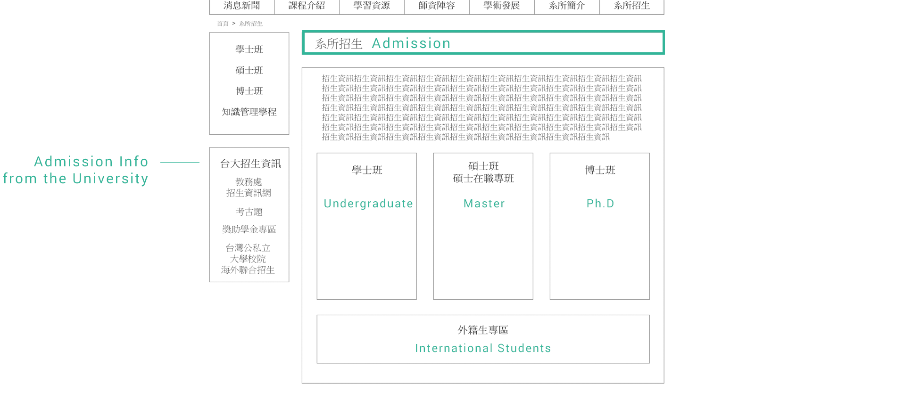
Click to see our wireframs made in Axure
New Website
Our wireframe received positive feedback from our peers and professor during class presentation, and it was used as the foundation for the NTULIS Website Design Team that was later founded during the summer of 2014. The design team was formed by students from the department with department director, professors, and staff managing the website involved. Below is how the redesigned website look like with the theme I proposed to the team.
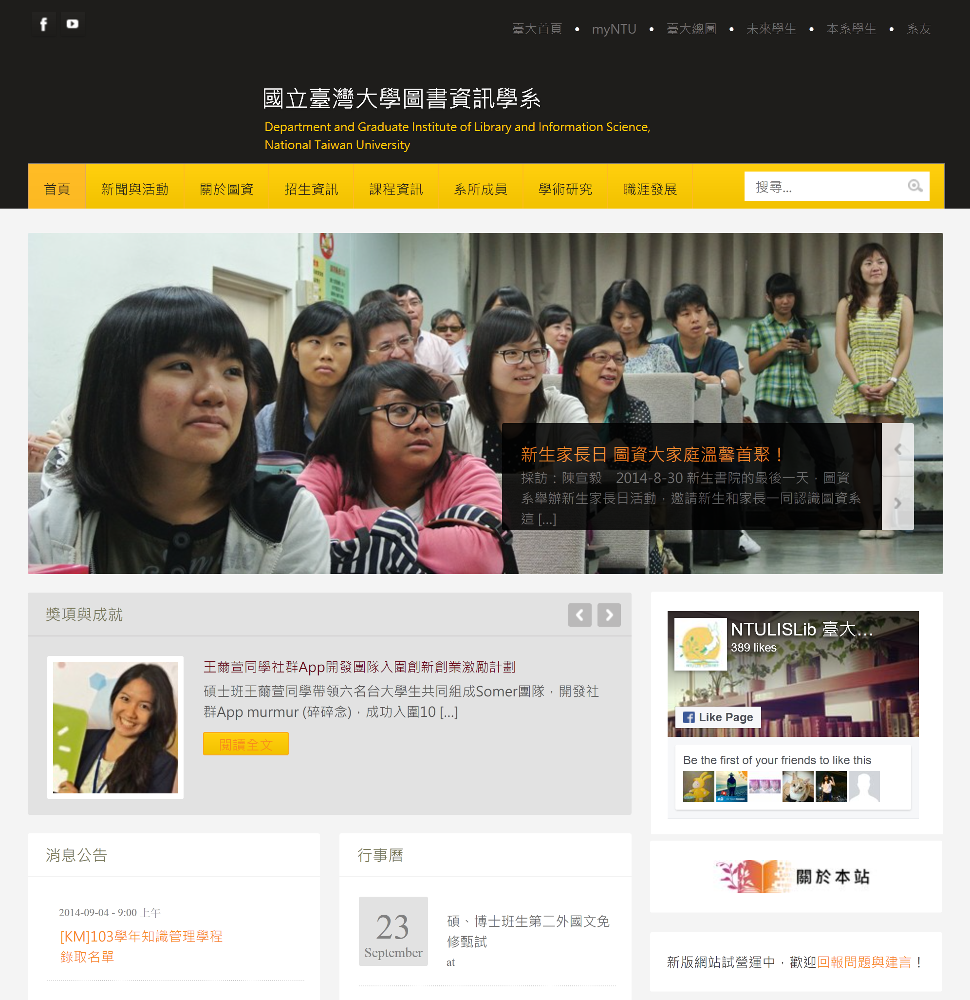
The new website put an emphasis on giving out a modern and welcoming look by adding featured images and headings about student events and achievements to capture the audience's attention. At the same time, the website implement audience segmentation, and clearer announcement and calendar for current students.
My contribution on the new design team
I and my teammate E.L. Wang were responsible for the "Course" category of the website, including restructuring information and UI design. We rewrote each page, transformed some of the content into tables and diagram when appropriate. Below are some of the works we did:
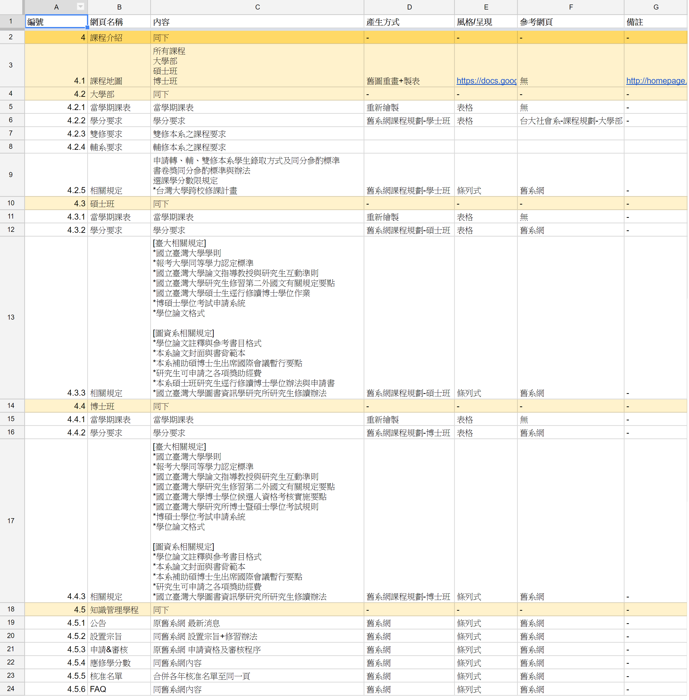
Content Inventory
We started by listing out each page needed for the new website under "Course", what format it should be, how it should be redesigned, and if there's any reference we can use.
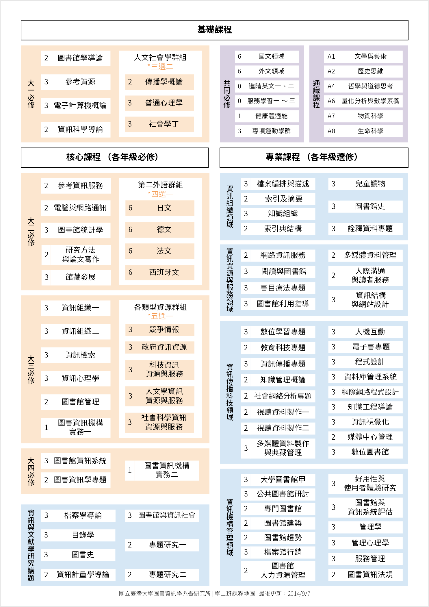
Redesigned CourseMap
We redesigned the CourseMap diagram with a more concise look and updated information, which aimed to provide both current and perspective students an overview of how the program was structured and what courses needed to be taken in order to achieve graduation.
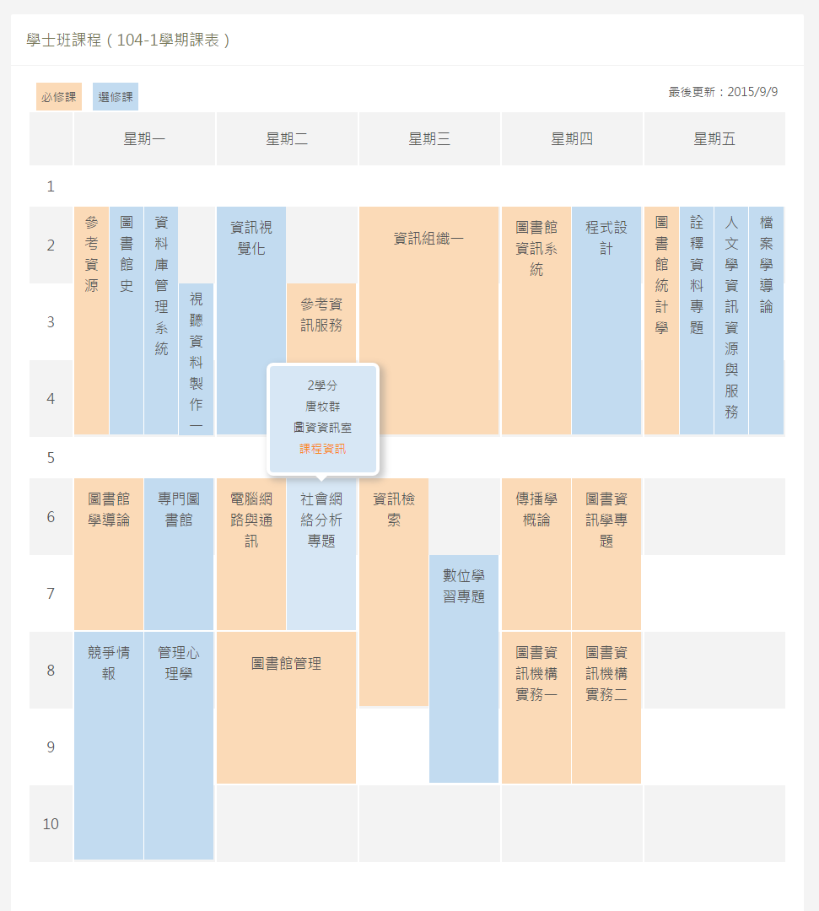
Course Schedule
We designed the UI together and I developed the javascript for it. Our goal for having this course schedule page is to provide an overview of courses being offered by the department at certain semester, and to faciliate students in deciding what courses to take for a new semester. For now, I'm in the process of developing it as an wordpress plug-in.
Live Demo